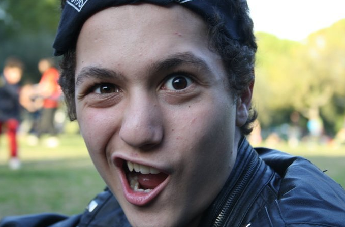

Página web personal del alumno Francisco Luis Jurado Gil, realizada en HTML y diseñada de la forma más horrorosa y ridícula posible para la asignatura Lenguaje de Marcas.
Saltar a Estudios - Saltar a Aficiones - Saltar a Datos Curiosos
- Saltar a Contacto
Estudios

- 3 años en una guardería del barrio.
- 6 años en Educación Primaria, donde empecé a desatar mi potencial.
- 4 años de Educación Secundaria Obligatoria, en la cual ya destacaba por encima de los demás estudiantes.
- 2 años de Bachillerato Tecnológico, que resulta ser el mejor de todos y el más útil, y que me sirvió para demostrar
mi superioridad respecto a todo el que se me acercara.
- 2 años en Grado en Ingeniería Informática: Ingeniería del Software en la Universidad de Sevilla, carrera que acabé
dejando porque me parecía demasiado fácil y no quería desmotivar a otros estudiantes.
- Actualmente estudiando Administración de Sistemas Informáticos en Red, el mejor ciclo de la historia,
en el IES Triana
Aficiones
- Me gusta estudiar hasta que me sangren los ojos, puesto que no le veo ningún otro sentido a la vida.
- Me gusta ver Kill Bill mínimo tres veces a la semana.
- Me gustan los videojuegos. De hecho, aún no se ha desarrollado ningún videojuego en el que no sea el mejor del planeta.
- Me gusta mucho la música tanto escucharla como tocar instrumentos. Toco la guitarra, el bajo y la batería.
- Por lo general, me gusta estar solo y enclaustrado en mi habitación escuchando música, porque odio a la humanidad y considero
que no es necesario tener ningún tipo de contacto con los demás.
Datos Curiosos
He aquí una lista de datos curiosos sobre Luis, algunos de los cuales aún no han sido revelados por su importancia para el mundo.
- Luis es un chico sencillo que se conforma con poca cosa. Con que le toque el Euromillones, él ya está
contento durante una semana entera.
- Aunque Luis pueda parecer arisco, tiene buen corazón. Se le puede hablar a cinco metros de distancia siempre que se haya tomado
el café por la mañana.
- Corre el rumor de que existe una religión que rinde culto a Luis en lo más profundo del Tíbet, aunque este dato
aún no ha sido confirmado.
Contacto
Para contrataciones: monólogos en bodas, bautizos o comuniones, espectáculos variados: LexAenima@gmail.com
Enlace externo a foro de emulación